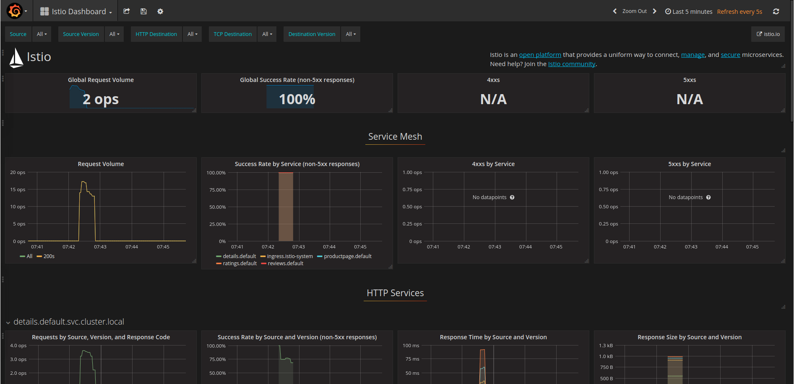

Quick Start with Google Kubernetes Engine
Quick Start instructions to install and run Istio in Google Kubernetes Engine (GKE) using Google Cloud Deployment Manager.
This Quick Start creates a new GKE cluster, installs Istio and then deploys the BookInfo sample application. It uses Deployment Manager to automate the steps detailed in the Istio on Kubernetes setup guide for Kubernetes Engine
Note: The default install will create a GKE alpha cluster that allows for automatic sidecar injection. As it is an alpha cluster, it does not support automatic node or master upgrades and will be automatically deleted after 30 days.
Prerequisites
This sample requires a valid Google Cloud Platform project with billing enabled. If you are not an existing GCP user, you may be able to enroll for a $300 US Free Trial credit.
Ensure that the Google Container Engine APIis enabled for your project (also found by navigating to “APIs & Services” -> “Dashboard” in the navigation bar). If you do not see “API enabled”, then you may enable the API by clicking the “Enable this API” button.
You must install and configure the gcloud command line tool and include the
kubectlcomponent (gcloud components install kubectl). If you don’t want to install thegcloudclient on your own machine, you can usegcloudvia Google Cloud Shell to perform the same tasks. You must set your default compute service account to include:
You must set your default compute service account to include:roles/container.admin(Kubernetes Engine Admin)Editor(on by default)
To set this, navigate to the IAM section of the Cloud Console and find your default GCE/GKE service account in the following form:
projectNumber-compute@developer.gserviceaccount.com: by default it should just have the Editor role. Then in the Roles drop-down list for that account, find the Kubernetes Engine group and select the role Kubernetes Engine Admin. The Roles listing for your account will change to Multiple.
Setup
Launch Deployment Manager
Once you have an account and project enabled, click the following link to open the Deployment Manager.
We recommend that you leave the default settings as the rest of this tutorial shows how to access the installed features. By default the tool creates a GKE alpha cluster with the specified settings, then installs the Istio control plane, the BookInfo sample app, Grafana with Prometheus, ServiceGraph, and Zipkin. You’ll find out more about how to access all of these below.
Click Deploy:
Wait until Istio is fully deployed. Note that this can take up to five minutes.
Bootstrap gcloud
Once deployment is complete, do the following on the workstation where you’ve installed gcloud:
Bootstrap kubectl for the cluster you just created and confirm the cluster is running and istio is enabled
gcloud container clusters listNAME ZONE MASTER_VERSION MASTER_IP MACHINE_TYPE NODE_VERSION NUM_NODES STATUS istio-cluster us-central1-a 1.7.8-gke.0 ALPHA (29 days left) 130.211.216.64 n1-standard-2 1.7.8-gke.0 3 RUNNINGIn this case, the cluster name is
istio-clusterNow acquire the credentials for this cluster
gcloud container clusters get-credentials istio-cluster --zone=us-central1-a
Verify installation
Verify Istio is installed in its own namespace
kubectl get deployments,ing -n istio-system
NAME DESIRED CURRENT UP-TO-DATE AVAILABLE AGE
deploy/grafana 1 1 1 1 3m
deploy/istio-ca 1 1 1 1 3m
deploy/istio-ingress 1 1 1 1 3m
deploy/istio-initializer 1 1 1 1 3m
deploy/istio-mixer 1 1 1 1 3m
deploy/istio-pilot 1 1 1 1 3m
deploy/prometheus 1 1 1 1 3m
deploy/servicegraph 1 1 1 1 3m
deploy/zipkin 1 1 1 1 3m
Now confirm that the BookInfo sample application is also installed:
kubectl get deployments,ing
NAME DESIRED CURRENT UP-TO-DATE AVAILABLE AGE
deploy/details-v1 1 1 1 1 3m
deploy/productpage-v1 1 1 1 1 3m
deploy/ratings-v1 1 1 1 1 3m
deploy/reviews-v1 1 1 1 1 3m
deploy/reviews-v2 1 1 1 1 3m
deploy/reviews-v3 1 1 1 1 3m
NAME HOSTS ADDRESS PORTS AGE
ing/gateway * 35.202.120.89 80 3m
Note down the IP and Port assigned to BookInfo product page. (in the example above, its 35.202.120.89:80.
You can also view the installation using the *Kubernetes Engine -> Workloads section on the Cloud Console:
Access the BookInfo sample
Set up an environment variable for BookInfo’s external IP address:
kubectl get ingress -o wideexport GATEWAY_URL=35.202.120.89Verify you can access the BookInfo
http://${GATEWAY_URL}/productpage:Now send some traffic to it:
for i in {1..100}; do curl -o /dev/null -s -w "%{http_code}\n" http://${GATEWAY_URL}/productpage; done
Verify installed Istio plugins
Once you have verified that the Istio control plane and sample application are working, try accessing the installed Istio plugins.
If you are using Cloud Shell rather than the installed gcloud client, you can port forward and proxy using its Web Preview feature. For example, to access Grafana from Cloud Shell, change the kubectl port mapping from 3000:3000 to 8080:3000. You can simultaneously preview four other consoles via Web Preview proxied on ranges 8080 to 8084.
Grafana
Set up a tunnel to Grafana:
kubectl -n istio-system port-forward $(kubectl -n istio-system get pod -l app=grafana -o jsonpath='{.items[0].metadata.name}') 3000:3000 &
then
http://localhost:3000/dashboard/db/istio-dashboard
You should see some statistics for the requests you sent earlier.

For more details about using Grafana, see About the Grafana Add-on.
Prometheus
Prometheus is installed with Grafana. You can view Istio and application metrics using the console as follows:
kubectl -n istio-system port-forward $(kubectl -n istio-system get pod -l app=prometheus -o jsonpath='{.items[0].metadata.name}') 9090:9090 &
View the console at:
http://localhost:9090/graph
For more details, see About the Prometheus Add-on.
ServiceGraph
Set up a tunnel to ServiceGraph:
kubectl -n istio-system port-forward $(kubectl -n istio-system get pod -l app=servicegraph -o jsonpath='{.items[0].metadata.name}') 8088:8088 &
You should see the BookInfo service topology at
http://localhost:8088/dotviz
For more details, see About the ServiceGraph Add-on.
Tracing
Set up a tunnel to Zipkin:
kubectl port-forward -n istio-system $(kubectl get pod -n istio-system -l app=zipkin -o jsonpath='{.items[0].metadata.name}') 9411:9411 &
You should see the trace statistics sent earlier:
http://localhost:9411
For more details on tracing see Understanding what happened.
Whats next?
You can further explore the BookInfo app and Istio functionality by following any of the tutorials in the Guides section. However, to do this you need to install istioctl to interact with Istio. You can either install it directly on our workstation or within Cloud Shell.
Uninstalling
Navigate to the Deployments section of the Cloud Console at https://console.cloud.google.com/deployments
Select the deployment and click Delete.
Deployment Manager will remove all the deployed GKE artifacts - however, items such as Ingress and LoadBalancers will remain. You can delete those artifacts by again going to the cloud console under Network Services -> LoadBalancers